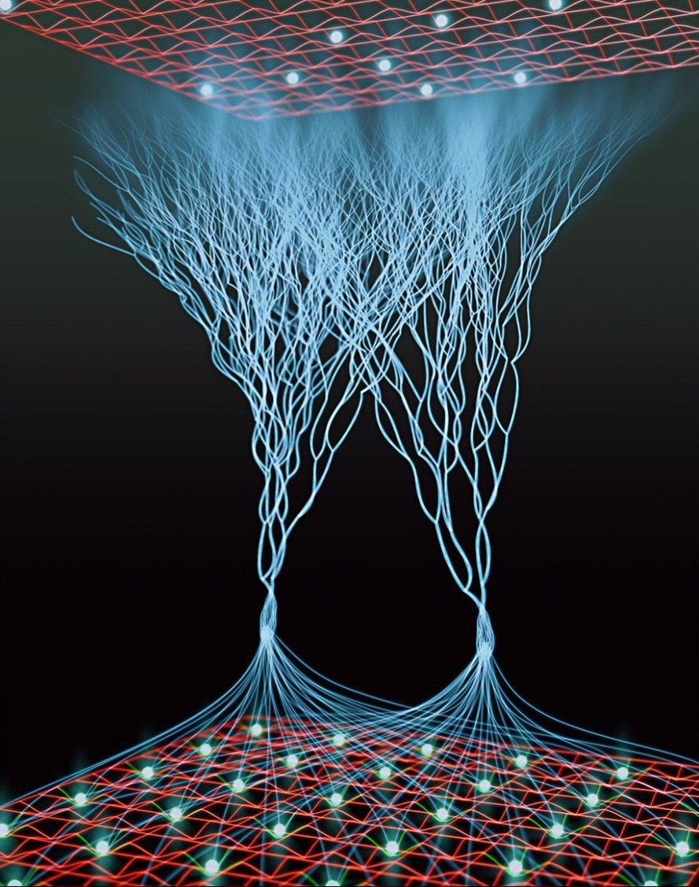

1. 前提として、現物・普通投資のみ。FXや信用は使わない。
2. なぜAIそのものを買わないか。進化が速すぎて、数年で主役が入れ替わるから。
3. だからAIまわりに投資する。AIを支える土台・裏方・インフラ。
4. 今回の対象は11銘柄。すべてAIの「周辺」に位置する。
5. 分類すると、テスト/QA系（SHIFT、デジタルハーツ、ポールトゥウィン、バルテス）。
6. ITコンサル/サービス系（Cognizant、IBM、Accenture、EPAM System、メンバーズ）。
7. セキュリティ系（トレンドマイクロ）。監視・可観測性系（Datadog）。
8. これらは「AIそのもの」ではなく「AIを使う企業を支える」立場。
9. AIブームが続くほど、テストもセキュリティも監視も需要が増える。
10. 逆にAIそのものが陳腐化しても、裏方は残りやすい。
11. これがAIまわり投資の最大のメリット。
12. ただしデメリットもある。成長はAI本体より緩やかで、地味。
13. 割高になりやすい銘柄も多く、小型株は変動が激しい。
14. 競合が多い分野もあり、差別化が効きにくいことがある。
15. 海外勢は強く、価格競争に巻き込まれるリスクもある。
16. それでも、長期・分散・現物なら許容できる範囲だと判断する。
17. 結論：良い寄り。ただし「AIそのもの」ではなく「AIまわり」。
18. 悪い理由もしっかり押さえた上で、現物で長期保有する。
19. 次のページから、良い理由と悪い理由を分けて整理する。
20. 良い理由は、需要の継続性・安定性・裏方性の3点。
21. 悪い理由は、割高・競合・地味さ・変動性の4点。
22. どちらも理解した上で、初めて「投資」と言える。
23. 一方的に持ち上げる記事は信用しない。
24. 一方的に貶す記事も同じく信用しない。
25. 両面を見て、自分の判断で現物を買う。
26. それが普通の投資の基本。
27. なお、AIそのものを買わない理由は「速すぎる」に尽きる。
28. 数年でモデルが変わり、数年でリーダーが変わる。
29. 個人がそれを追い続けるのは現実的でない。
30. だから土台側に投資する。土台は急に消えない。
31. テストも、セキュリティも、監視も、AIが増えるほど必要になる。
32. これはAIの流行に関係なく、IT全体の底上げ需要。
33. つまり「AIまわり」は、AIブームの恩恵を間接的に受ける。
34. 間接的だからこそ、ブームが冷めても致命傷になりにくい。
35. これが「AIまわり」を選ぶ最大の理由。
36. 5ページ目でカテゴリの位置、6ページ目で銘柄の位置を示す。
37. 十字グラフで、AIとの距離と成長/安定を見える化する。
38. 位置関係が分かれば、自分のポートフォリオの偏りも分かる。
39. 次ページ以降で、具体的な良い理由に入る。
40. まずはこの結論を頭に置いて読み進めてほしい。

1. 良い理由の1つ目は、需要の継続性。
2. AIが普及するほど、テストもセキュリティも監視も必要になる。
3. これは一時のブームではなく、IT全体の底上げ需要。
4. 2つ目は安定性。裏方は主役より入れ替わりが遅い。
5. 3つ目は裏方性。目立たないが、確実に仕事が来る。
6. テスト/QAは、ソフト開発が増えるほど需要が増える。
7. SHIFTはテスト特化で、国内大手。成長性が高い。
8. デジタルハーツはデバッグ大手。安定と成長の中間。
9. ポールトゥウィンはデバッグ系。安定寄り。
10. バルテスはテスト特化の小型株。成長余地はあるが変動大。
11. ITコンサル系は、企業のDXを支える。DX需要は続く。
12. Cognizantは米系で割安感。安定と成長のバランス。
13. IBMは歴史ある企業IT。低成長だが安定。
14. Accentureはコンサル最大手。堅実で高収益。
15. EPAM Systemは東欧エンジニア強み。成長性が高い。
16. メンバーズはデジタル支援。国内のDX需要を拾う。
17. トレンドマイクロはセキュリティ。AI時代ほど需要が増す。
18. Datadogは監視・可観測性。クラウド時代の必須インフラ。
19. これらは「AIそのもの」ではなく「AIを使う側」を支える。
20. AIが増えれば増えるほど、裏方の仕事も増える。
21. これが良い理由の核心。
22. もう1つ、裏方は景気に左右されにくい面もある。
23. テストもセキュリティも、止めたら事故になる。
24. だから予算が削られにくい。これも安定性の根拠。
25. ただし、これらの良い理由は「万能」ではない。
26. 次ページで悪い理由もしっかり扱う。
27. 良い理由だけ見て買うのは危険。
28. 悪い理由を知った上で買うのが普通の投資。
29. ここでは「良い寄り」の根拠を並べただけ。
30. 実際の判断は、悪い理由とセットで行う。
31. 需要の継続性は、AIブームが続く限り有効。
32. 安定性は、裏方であることの最大の強み。
33. 裏方性は、地味さと表裏一体。そこは次ページで。
34. まとめると、良い理由は「続く・残る・必要とされる」。
35. この3点が、AIまわり投資の土台。
36. 5ページ目のグラフでは、この位置関係を可視化する。
37. 6ページ目では、11銘柄をその位置に置く。
38. 位置が分かれば、自分の好みも分かる。
39. 成長重視か、安定重視か。それで選ぶ銘柄は変わる。
40. 次ページで、悪い理由に入る。
1. 悪い理由の1つ目は、割高になりやすいこと。
2. 特にSHIFTやDatadogなど、成長期待が高い銘柄はPERが高い。
3. PERが高いと、業績が少しでも悪化したときに株価が大きく下がる。
4. 2つ目は競合が多いこと。テストもコンサルも参入者が多い。
5. 3つ目は地味さ。AI本体のような派手な話題性がない。
6. 4つ目は変動性。小型株は数日で大きく動く。
7. SHIFTは成長期待が高い分、失望時の下落も大きい。
8. バルテスは小型株で、流動性が低く値動きが荒い。
9. ポールトゥウィンは安定寄りだが、成長は緩やか。
10. デジタルハーツも競合が多く、差別化が難しい面がある。
11. 海外勢は価格競争力が強く、日本企業は押されやすい。
12. Cognizantは割安だが、成長率はそれほど高くない。
13. IBMは低成長で、株価の伸びは限定的になりやすい。
14. Accentureは堅実だが、割高感がある局面もある。
15. EPAMは地政学リスク（東欧起源）を抱える。
16. メンバーズは規模が小さく、成長はまだ途上。
17. トレンドマイクロは成熟市場で、成長は緩やか。
18. Datadogは成長期待が高い分、割高で変動が大きい。
19. これらは「悪い理由」であり、無視してはいけない。
20. ただし、悪い理由があるからといって即「買わない」ではない。
21. 良い理由と悪い理由を天秤にかけて判断する。
22. 悪い理由が許容範囲なら、買う判断もあり得る。
23. 逆に、悪い理由が大きすぎるなら、見送る。
24. ここが「普通の投資」と「ギャンブル」の分かれ目。
25. 今回の11銘柄は、悪い理由を抱えつつも許容範囲と判断。
26. ただし、それは「長期・分散・現物」が前提。
27. 短期売買や信用取引なら、話は別。
28. 現物で長期保有するからこそ、悪い理由を吸収できる。
29. 割高は、時間が解決する場合がある。
30. 競合は、差別化が効けば問題にならない。
31. 地味さは、長期ではむしろ美点になることもある。
32. 変動性は、分散でならすことができる。
33. つまり、悪い理由は「対策可能」なものが多い。
34. だから「悪い寄り」ではなく「良い寄り」と判断する。
35. ただし、それは万人に勧められるものではない。
36. 自分で理解し、自分で判断できる人向け。
37. 5ページ目・6ページ目で、位置関係を確認する。
38. 自分のリスク許容度と照らし合わせてほしい。
39. 次ページで、AIまわり投資の考え方をまとめる。
40. 悪い理由を知ることが、良い投資への第一歩。
1. ここまでで、良い理由と悪い理由を整理した。
2. 結論は「良い寄り」。ただし条件付き。
3. 条件は、現物・長期・分散。そして「AIそのもの」を買わないこと。
4. AIそのものは進化が速すぎて、個人が追うには危険。
5. 数年でモデルが変わり、数年で主役が入れ替わる。
6. だからAIまわりに投資する。
7. AIを支える土台は、AI本体より長持ちする。
8. テスト、セキュリティ、監視、コンサル。どれも裏方。
9. 裏方は目立たないが、確実に需要がある。
10. これがAIまわり投資の本質。
11. では、11銘柄はAIに対してどの位置にあるのか。
12. それを可視化するのが、5ページ目と6ページ目の十字グラフ。
13. 十字グラフの軸は「AIとの距離」と「成長/安定」。
14. 横軸：AIに近い ←→ AIから遠い（間接）。
15. 縦軸：成長性が高い ←→ 安定・ディフェンシブ。
16. 中央には「AIそのもの」を置く。
17. その周囲に、AI関連のカテゴリを配置する。
18. 5ページ目はカテゴリのみ。銘柄名は出さない。
19. 6ページ目は、その位置に11銘柄を置く。
20. なぜカテゴリと銘柄を分けるか。全体像を見やすくするため。
21. まずカテゴリで地図を作り、次に銘柄で点を打つ。
22. これで「自分がどこに投資しているか」が一目で分かる。
23. 空きポジションも見える。そこが次の調査対象になる。
24. 例えば、AI関連の電力、AI関連のサーバー、データセンター。
25. これらは「AIに近い×安定」または「AIに近い×成長」に入る。
26. 噂レベルでも、そうした分野は存在する。
27. ただし、噂で飛びつくのは危険。まずは調査。
28. グラフは、調査の出発点として使う。
29. 投資判断そのものは、良い理由と悪い理由の両面で行う。
30. グラフはその補助ツール。主役はあくまで銘柄の中身。
31. 5ページ目でカテゴリの地図を確認する。
32. 6ページ目で、11銘柄の位置を確認する。
33. 自分のポートフォリオと照らし合わせる。
34. 偏りがあれば、分散のヒントになる。
35. 空きポジションがあれば、次の調査候補になる。
36. これが、グラフを作る理由。
37. AIそのものは買わない。AIまわりを買う。
38. その判断を、グラフで裏付ける。
39. 次ページから、実際のグラフを見ていく。
40. まずは5ページ目、カテゴリの地図から。
1. 中央に「AIそのもの」を置く。
2. 横軸は「AIに近い ←→ AIから遠い（間接）」。
3. 縦軸は「成長性が高い ←→ 安定・ディフェンシブ」。
4. この4象限に、AI関連カテゴリを配置する。
5. 近×成長：AIサーバー、AI半導体、AIクラウド。
6. 近×安定：AI電力、データセンター、AIセキュリティ。
7. 遠×成長：テスト/QA、デバッグ、DevOps。
8. 遠×安定：ITコンサル、SIer、監視・可観測性。
9. 11銘柄は、主に「遠×成長」と「遠×安定」に集まる。
10. つまり、AIから見ると間接的だが、需要は確実。
11. 空きポジションは「近×成長」と「近×安定」。
12. ここが、AI関連の電力・サーバー・データセンターの領域。
13. 次ページで、11銘柄をこの地図に置く。
1. 前ページのカテゴリ地図に、11銘柄を置く。
2. SHIFT（3697）：テスト特化。遠×成長のやや上。
3. バルテス（4442）：テスト特化・小型。遠×成長の上寄り。
4. デジタルハーツ（3676）：デバッグ大手。遠×成長の中ほど。
5. ポールトゥウィン（3657）：デバッグ系。遠×成長の下寄り。
6. メンバーズ（3155）：デジタル支援。遠×成長の下。
7. Datadog（DDOG）：監視・可観測性。遠×成長と遠×安定の中間。
8. トレンドマイクロ（4704）：セキュリティ。遠×安定の上寄り。
9. IBM（IBM）：企業IT。遠×安定の中央。
10. Cognizant（CTSH）：ITコンサル。遠×安定のやや上。
11. Accenture（ACN）：ITコンサル最大手。遠×安定の上。
12. EPAM（EPAM）：IT開発。遠×成長と安定の中間。
13. まとめると、11銘柄は「遠」側に集中している。
14. つまり、AIから見ると間接的。それが「AIまわり」の証拠。
15. 近側（AIサーバー・電力など）は、まだ空きポジション。
16. 空きポジションは、今後の調査候補になる。
17. ただし、噂で飛びつかず、まずは調査。
18. グラフは調査の出発点。投資判断は別で行う。
19. 自分のポートフォリオと照らし合わせてほしい。
20. 偏りがあれば分散のヒント。空きがあれば調査候補。
21. これが、このグラフを作った理由。
22. AIそのものは買わない。AIまわりを買う。
23. その判断を、位置関係で裏付ける。
24. 以上で、サイトの内容は終わり。
25. 結論：現物・長期・分散で、AIまわりを買う。
26. 良い理由と悪い理由の両面を理解した上で。
27. これが普通の投資。ギャンブルではない。
28. 最後まで読んでくれてありがとう。